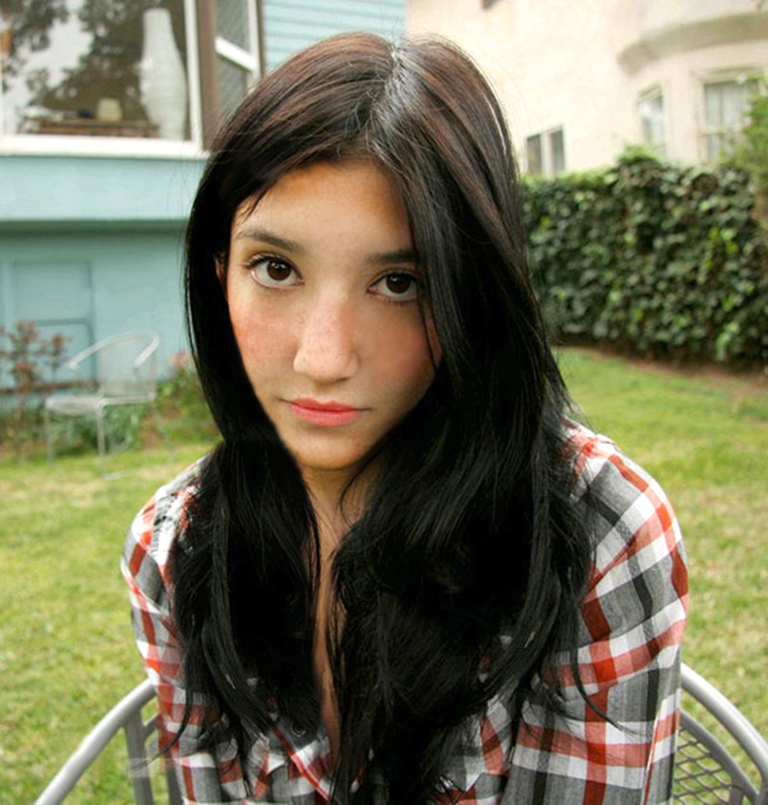
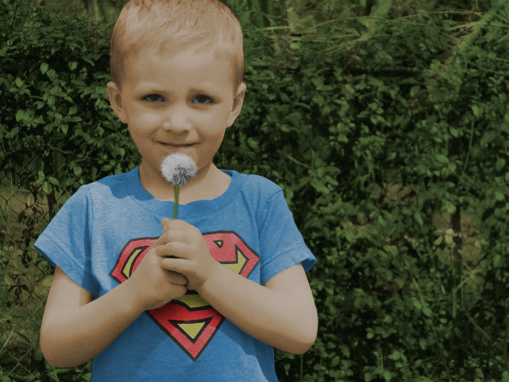
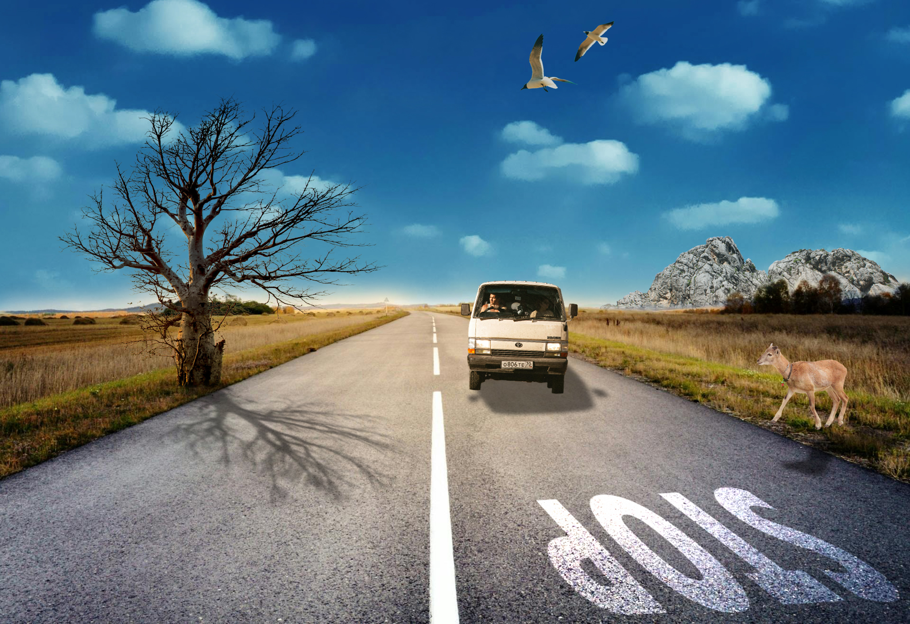
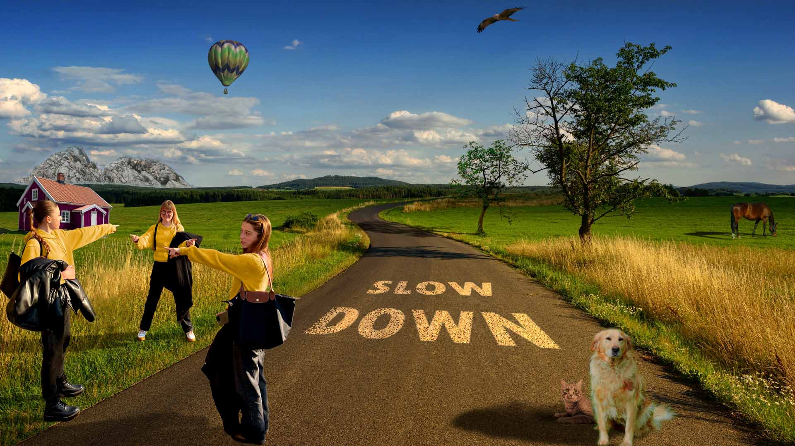
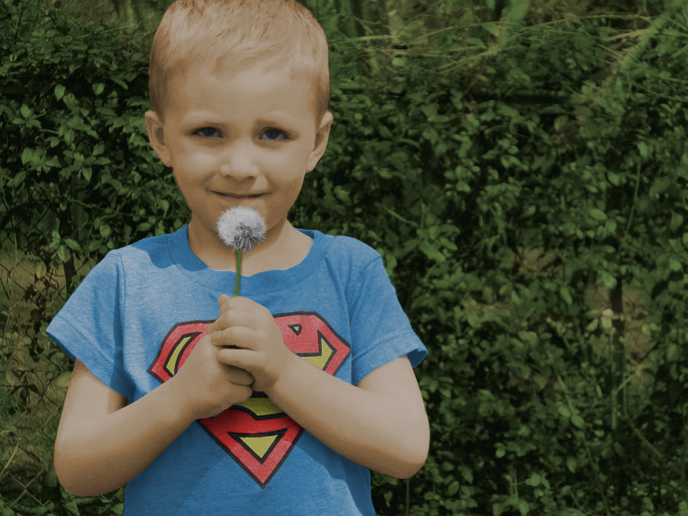
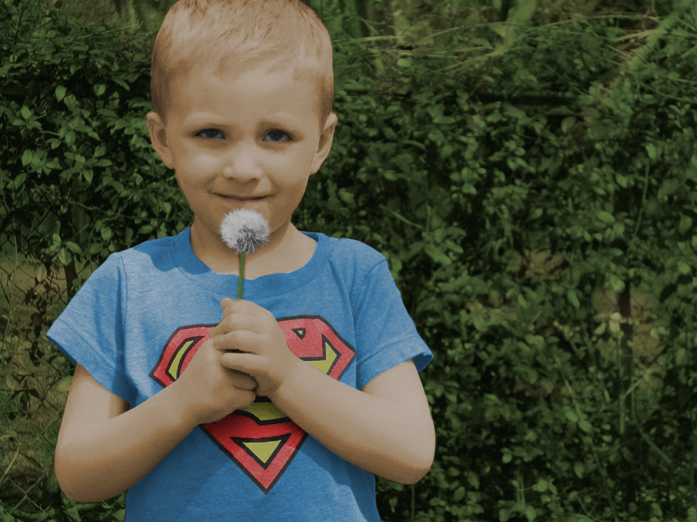
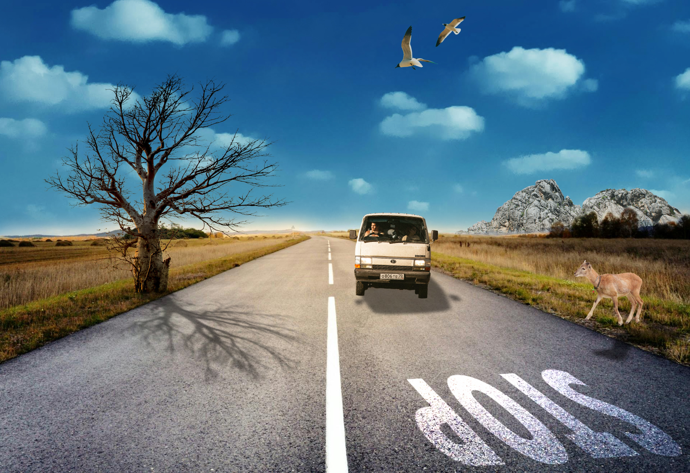
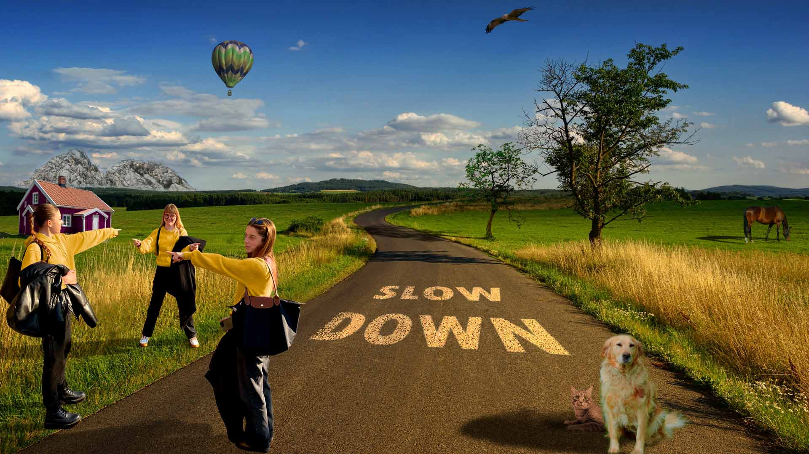
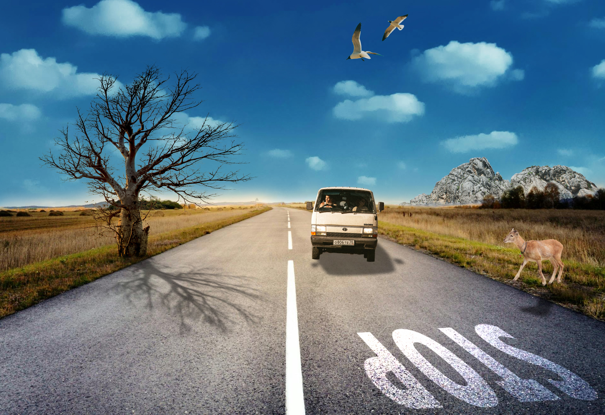
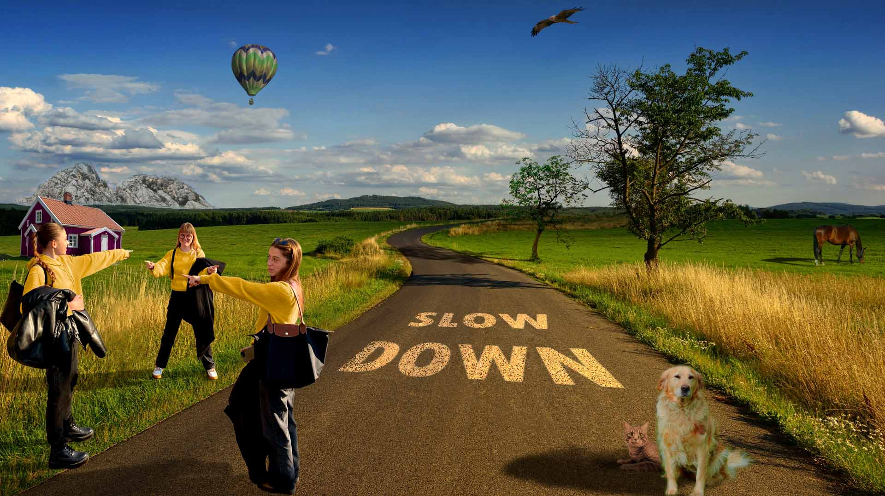

-početna-
-o meni-
-video-
Vježbe iz kolegija Digitalni multimedij 1
VEKTORSKA GRAFIKA
Na sljedećim linkovima nalaze se dokumenti sa zadacima u skolpu vektorske grafike:
Prva vježba-Stvaranje vlastitog fonta
Druga vježba-Bezierova krivulja, precizno crtanje
Treća vježba-Boja, transformacije
Četvrta vježba-Gradijenti, transparencija
Četvrta vježba-Zadatak
Prvi projektni zadatak
PIKSEL GRAFIKA


 
VIDEO EDITIRANJE
 

 


